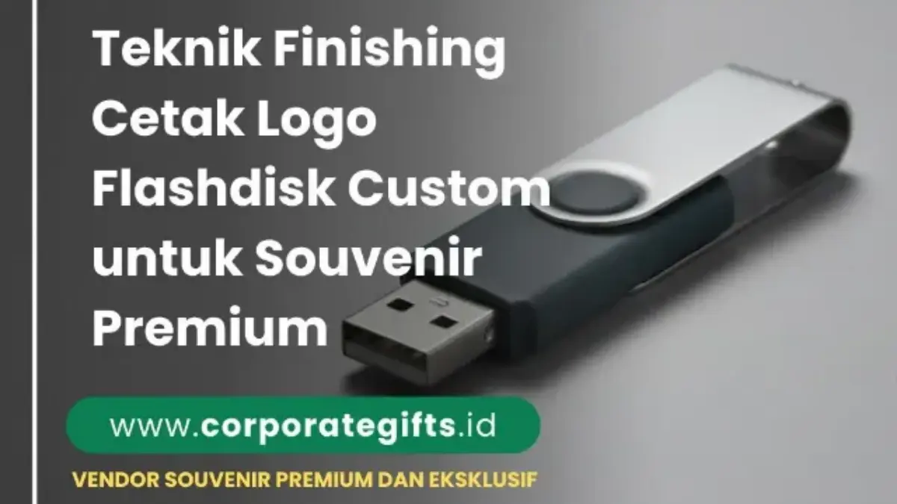

Corporate Gifts ID - Dalam memilih flashdisk custom sebagai souvenir kantor, bukan hanya kapasitas penyimpanan dan kualitas chip memori yang krusial, melainkan juga tampilan visual luar yang menjadi representasi langsung citra perusahaan. Teknik cetak logo flashdisk custom yang paling umum diaplikasikan untuk merchandise korporat meliputi emboss, deboss, sablon warna (screen printing), digital UV printing, dan grafir laser (laser engraving). Masing-masing teknik membawa karakteristik visual unik, tingkat ketahanan pakai, serta kecocokan material yang berbeda.
Pemilihan metode finishing yang tepat akan menentukan apakah souvenir flashdisk Anda dipandang sebagai cinderamata biasa atau sebagai merchandise eksekutif bernilai tinggi yang memperkuat reputasi brand korporat di mata klien, mitra bisnis, maupun peserta seminar.
Poin Kunci Pemilihan Teknik Cetak Logo Flashdisk:
- Material Logam & Kayu: Sangat ideal dipadukan dengan teknik laser engraving (grafir laser) untuk hasil permanen tanpa risiko luntur.
- Material Kulit Sintetis & Rubber: Paling cocok menggunakan metode deboss atau emboss demi menciptakan tekstur mewah yang elegan.
- Flashdisk Bentuk Kartu (USB Card): Memiliki permukaan datar luas yang sempurna untuk teknologi digital UV printing full color beresolusi tinggi.
- Kampanye Promosi Massal: Sablon manual atau semi-otomatis menjadi opsi paling ekonomis untuk pesanan skala besar dengan anggaran ketat.
Pentingnya Finishing dan Teknik Cetak pada Flashdisk Custom
Finishing merupakan tahap akhir dalam proses manufaktur merchandise yang secara langsung mengunci kualitas estetika dan fungsionalitas visual produk. Tanpa teknik cetak yang presisi, logo korporat pada flashdisk dapat cepat tergores, pudar saat terkena gesekan saku, atau bahkan terkelupas dalam hitungan bulan penggunaan aktif.
1. Efek Visual dan Kesan Profesional Perusahaan
Flashdisk yang diproduksi dengan cetakan logo rapi dan tajam memancarkan standar profesionalisme tinggi. Ketika mitra bisnis menerima cinderamata dengan logo bertekstur atau grafir presisi, persepsi positif terhadap kredibilitas perusahaan Anda akan langsung terbentuk secara alami.
2. Ketahanan Branding dan Retensi Pakai Jangka Panjang
Flashdisk adalah perangkat portabel harian yang sering berpindah dari tas kerja, meja kantor, hingga saku pakaian. Memilih teknik cetak berdaya rekat kuat memastikan identitas brand Anda tetap terbaca sempurna sepanjang usia operasional perangkat penyimpanan data tersebut.
3. Peningkatan Nilai Apresiasi dan Diferensiasi Souvenir
Di tengah banyaknya cinderamata generik di pasaran, flashdisk dengan kustomisasi eksklusif seperti deboss monogram atau grafir nama personal memberikan pengalaman penerimaan yang berkesan (high perceived value), menjadikannya hadiah yang benar-benar dijaga dan digunakan rutin.
Tabel Matriks Perbandingan 5 Teknik Cetak Logo Flashdisk Custom
Berikut adalah matriks komparasi mendalam antara kelima metode cetak logo flashdisk untuk memudahkan tim pengadaan (procurement) dan marketing dalam menentukan opsi terbaik sesuai anggaran serta target audiens:
| Teknik Cetak | Material yang Cocok | Karakteristik Hasil | Kelebihan Utama | Kekurangan / Batasan | Rekomendasi Penggunaan |
|---|---|---|---|---|---|
| Emboss | Kulit PU, Leather asli, Rubber/Karet | Tekstur logo menonjol timbul 3D di permukaan bahan | Kesan premium, tahan gesekan, tidak ada tinta yang terkelupas | Hanya satu warna tekstur bahan, kurang cocok untuk garis desain rumit | Flashdisk kulit eksekutif & cinderamata VIP |
| Deboss | Kulit sintetis, Hard rubber, Sampul kayu tipis | Logo tenggelam membentuk cekungan rapi presisi | Sangat elegan, subtle, tidak luntur, dapat diberi hot stamping foil emas/perak | Memerlukan pembuatan cetakan (matras logam) di awal | Corporate gift set direksi & merchandise eksklusif |
| Sablon Warna | Plastik ABS, Metal flat, Putar kayu | Lapisan tinta padat flat sesuai kode warna Pantone | Biaya sangat ekonomis untuk kuantitas besar, warna solid terang | Dapat terkelupas jika terkena gesekan benda tajam dalam jangka panjang | Seminar kit massal, promosi pameran, event mahasiswa |
| Digital UV Printing | Plastik PVC (USB Card), Metal, Akrilik, Kayu | Cetak digital resolusi foto (full color, gradasi & efek glossy/matte) | Mampu mencetak foto, desain warna-warni tanpa batas layer warna, cepat kering | Biaya per pcs sedikit lebih tinggi dibanding sablon manual pada quantity masif | Flashdisk kartu ID, seminar kit profesional, kartu nama digital |
| Grafir Laser | Aluminium, Stainless steel, Kuningan, Kayu bambu | Etsa permukaan permanen dengan pantulan warna alami material dasar | Abadi selamanya, anti gores, sangat presisi hingga detail tulisan 1mm, bisa personalisasi nama | Hanya menghasilkan warna monokrom (warna lapisan logam yang terkelupas) | Flashdisk putar metal, USB OTG metal, gift set premium B2B |

Perbandingan metode finishing grafir laser, UV printing, deboss, emboss, dan sablon pada material flashdisk custom.
5 Teknik Cetak Logo Flashdisk Custom Terpopuler
Untuk memahami lebih rinci cara kerja dan aplikasi teknis dari masing-masing metode cetak, simak ulasan mendalam mengenai kelima teknologi finishing berikut:
1. Teknik Emboss (Efek Logo Timbul Tiga Dimensi)
Teknik emboss dilakukan dengan menekan material menggunakan sepasang matras cetak panas (male and female die) bertekanan tinggi sehingga area logo terangkat ke atas melebihi permukaan sekitarnya. Metode ini sangat populer pada varian flashdisk berbalut kulit sintetis (PU leather) atau gantungan kunci USB rubber.
Keunggulan: Memberikan efek taktil tiga dimensi yang terasa nyata saat disentuh, bebas dari risiko luntur karena tidak memakai cairan tinta kimia, serta menciptakan citra klasik yang berwibawa.
2. Teknik Deboss (Efek Cekung Elegan & Subtle)
Kebalikan dari emboss, teknik deboss menekan logo ke dalam permukaan material sehingga membentuk lekukan cekung yang rapi dan halus. Pada material kulit premium, deboss sering dikombinasikan dengan hot foil stamping (lapisan foil emas atau perak) guna menghasilkan kilau mewah saat terpapar cahaya.
Keunggulan: Logo menyatu secara kokoh ke dalam pori-pori material, memberikan kesan eksekutif minimalis, dan sangat awet untuk souvenir jangka panjang.
3. Sablon Warna / Screen Printing (Ekonomis & Presisi)
Sablon warna merupakan metode pencetakan berbasis screen mesh dan tinta khusus plastik atau metal yang diaplikasikan langsung ke bodi flashdisk. Teknik ini sangat cocok untuk logo korporasi yang memiliki warna baku solid (seperti warna identitas brand perbankan atau BUMN).
Keunggulan: Efisiensi biaya produksi yang sangat tinggi pada pemesanan di atas 500 hingga 1.000 pcs, warna logo terlihat cerah dan solid, serta proses pengerjaan yang relatif cepat.
4. Digital UV Printing (Full Color & Gradasi Tajam)
UV flatbed printing adalah terobosan cetak digital mutakhir di mana tetesan tinta mikroskopis disemprotkan ke permukaan flashdisk dan langsung dikeringkan seketika menggunakan radiasi sinar ultraviolet (UV light). Teknologi ini memungkinkan pencetakan gambar visual kompleks, foto gedung instansi, maupun ilustrasi penuh warna.
Keunggulan: Mendukung desain full color tanpa batas jumlah warna, resolusi cetak mencapai 1440 dpi, hasil tahan air dan tidak mudah memudar, serta sangat ideal untuk model USB kartu (flashdisk card) ukuran ATM.
5. Grafir Laser / Laser Engraving (Ketahanan Permanen)
Grafir laser bekerja dengan memanfaatkan sinar laser berdaya tinggi yang dikendalikan oleh komputer untuk mengikis lapisan terluar material flashdisk secara mikroskopis. Hasil etsa laser menghasilkan logo dengan ketajaman garis luar biasa dan warna kontras alami dari logam atau kayu di baliknya.
Keunggulan: Ketahanan bersifat 100% permanen (tidak akan pernah hilang selama bodi flashdisk masih utuh), tahan suhu ekstrem dan goresan kunci di saku, serta memungkinkan kustomisasi unik seperti pencantuman nama perorangan (individual personalization) pada setiap unit souvenir.
Faktor Penting dalam Memilih Teknik Cetak yang Tepat
Sebelum memutuskan metode finishing untuk proyek pengadaan cinderamata kantor, ada beberapa aspek strategis yang perlu dievaluasi:
- Kesesuaian Material Flashdisk: Pastikan metode cetak sesuai dengan bahan bodi USB. Contohnya, jangan memilih deboss untuk bahan aluminium padat, dan hindari laser grafir jika Anda menginginkan logo berwarna merah-biru terang pada plastik ABS.
- Kompleksitas Desain Logo Brand: Apabila panduan identitas visual (brand guideline) perusahaan Anda mengharuskan gradasi 4 warna, UV printing adalah pilihan wajib. Namun jika logo berupa tipografi minimalis, grafir laser atau deboss akan terlihat jauh lebih elegan.
- Alokasi Anggaran Pengadaan (Budgeting): Sesuaikan volume pesanan dengan metode cetak. Untuk kebutuhan ribuan peserta seminar, sablon 1-2 warna menawarkan efisiensi biaya tertinggi per unit.
- Segmen Penerima Souvenir: Untuk jajaran direksi, tamu VIP kenegaraan, atau pembicara kunci seminar, pilih flashdisk metal berbalut grafir laser atau flashdisk kulit ber-deboss rapi yang dikemas dalam hardbox eksklusif.
Rekomendasi Kombinasi Material Flashdisk dan Metode Finishing
Berikut beberapa rekomendasi konfigurasi produk souvenir flashdisk custom terfavorit yang telah terbukti sukses di berbagai event korporat nasional:
- Flashdisk Putar Metal (USB Swivel) + Grafir Laser: Pilihan paling populer untuk merchandise kantor harian. Bodi metal anti gores dengan grafir logo korporat presisi di bagian penutup putarnya.
- Flashdisk Kulit Dompet + Deboss Logo Emas: Desain mewah berbentuk gantungan kunci berbahan kulit PU tebal dengan penutup magnetis, sangat cocok untuk gift set direksi.
- Flashdisk Kartu PVC + UV Printing Full Color 2 Sisi: Berukuran persis kartu e-toll atau ATM, memungkinkan pencetakan foto produk, profil perusahaan, hingga QR code materi seminar kit di sisi belakang.
- Flashdisk Kayu Bambu Ramah Lingkungan + Laser Engraving: Mendukung inisiatif eco-friendly corporate gift dengan nuansa kayu natural dan ukiran logo etnik berkelas.
Pertanyaan Seputar Teknik Cetak Logo Flashdisk Custom (FAQ)
Kesimpulan dan Konsultasi Souvenir Flashdisk Custom
Finishing dan teknik cetak logo memegang peranan krusial dalam mengubah sebuah media penyimpanan data sederhana menjadi souvenir kantor berkelas premium. Dengan memilih metode yang selaras antara material, karakter desain logo, dan tujuan branding - baik grafir laser permanen, UV printing full color, maupun deboss kulit elegan - perusahaan Anda dapat menyajikan cinderamata yang fungsional sekaligus membanggakan.
Jelajahi beragam katalog katalog souvenir kantor dan konsultasikan proyek kustomisasi flashdisk korporat Anda bersama tim spesialis di Corporate Gifts ID untuk mendapatkan sampel mockup visual 3D serta penawaran B2B terbaik.